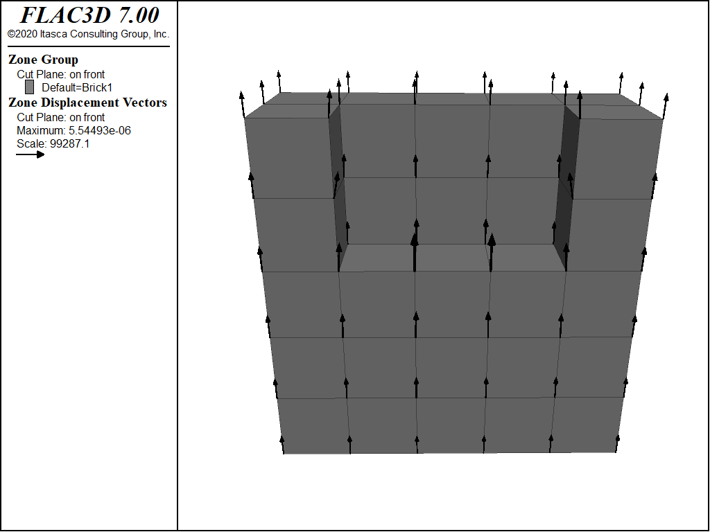
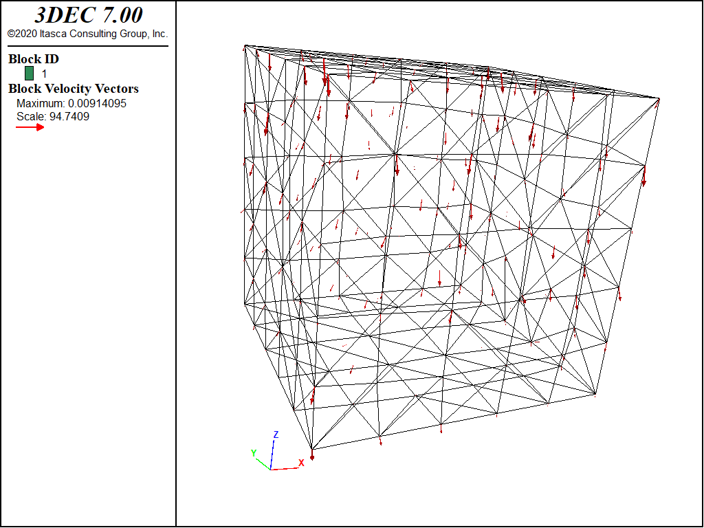

应力边界
默认情况下，3DEC 模型边界无应力，也无任何约束。可以使用 block face apply 命令，向任何边界或边界的一部分施加力或应力。注意，刚性和可变形块体均可施加力与应力。使用 stress 关键字分别指定应力张量各分量（\(\sigma_{xx}\)、\(\sigma_{yy}\)、\(\sigma_{zz}\)、\(\sigma_{xy}\)、\(\sigma_{xz}\) 和 \(\sigma_{yz}\)）。例如，命令
block face apply stress 0,0,-1e6 0,0,0 range pos-x 0 10 pos-y -1 1 pos-z 0 10
将向位于坐标窗口 0 < \(x\) < 10、−1 < \(y\) < −1、0 < \(z\) < 10 内的模型边界施加 \(\sigma_{xx}\) = 0、\(\sigma_{yy}\) = 0、\(\sigma_{zz}\) = −10:sup:6 以及零剪应力。用户始终应确保该窗口包含所有拟施加此边界条件的边界顶点。可以使用边界条件（Boundary Conditions）绘图项进行检查。
也可以单独施加各应力分量。例如：
block face apply stress-zz -1e6 range pos-z 10
按照 3DEC 内部应力的一般符号约定，压应力取负号。此外，3DEC 实际上以力或面力的形式施加应力分量，这些力由应力张量作用于指定边界平面而产生。面力分为永久和瞬态两部分。永久面力为恒定荷载；瞬态面力为动力分析所施加的时变荷载（参阅动力输入的施加（Application of Dynamic Input）），通过在 stress 关键字所在的同一命令行中使用 FISH函数（fish） 或 表格插值取值（table） 关键字施加。
使用带 force-x、force-y 或 force-z 关键字的 block gridpoint apply 命令，可以向刚性或可变形块体的模型边界施加单独的力。这些关键字分别指定所施加力矢量的 \(x\)、\(y\) 和 \(z\) 分量。注意，力施加在网格点上，应力施加在面上。
施加应力梯度
block face apply 命令可带有附加关键字 x 向梯度（gradient-x）、y 向梯度（gradient-y） 和／或 gradient-z，使所施加应力在指定范围内线性变化。每个关键字后跟六个参数，描述应力分量在 \(x\)、\(y\) 或 \(z\) 方向的变化：
gradient-x sxxx syyx szzx sxyx sxzx syzx
gradient-x sxxy syyy szzy sxyy sxzy syzy
gradient-x sxxz syyz szzz sxyz sxzz syzz
应力随距全局坐标原点（\(x\) = 0、\(y\) = 0、\(z\) = 0）的距离线性变化：
其中，\(\sigma^\circ_{xx}\)、\(\sigma^\circ_{yy}\)、\(\sigma^\circ_{zz}\)、\(\sigma^\circ_{xy}\)、\(\sigma^\circ_{xz}\) 和 \(\sigma^\circ_{yz}\) 是原点处的应力分量。
以下示例最能说明此功能的工作方式：
block face apply stress 0,0,-10e6 0,0,0 grad-z 0,0,1e5 0,0,0
原点（\(x\) = 0、\(y\) = 0、\(z\) = 0）处的应力为：
应力分量 \(σ_{zz}\) 随 \(z\) 变化的方程为
因此，\(z\) = −100 处的 \(\sigma_{zz}\) 值为 −20 × 106。对于中间各点，\(z\) 方向的变化按其距原点的相对 \(z\) 距离线性缩放。
也可以仅对一个应力分量施加梯度。此时，输入为一个矢量，给出该分量在 \(x\)、\(y\) 和 \(z\) 方向的变化。以下示例将产生与上述示例相同的结果：
block face apply stress-zz gradient 0 0 10e5
施加应力梯度通常用于再现重力引起的应力随深度增加的效应。必须确保所施加梯度与 :cmd:block.insitu` 命令指定的梯度以及重力加速度值（设置重力命令（model gravity） 命令）相容。
改变边界应力
如上所述，动力分析可使用 FISH函数（fish） 或 表格插值取值（table） 关键字施加瞬态荷载。静力分析中，也可能需要在 3DEC 模拟过程中改变所施加应力的数值。例如，基础上的荷载可能发生变化。若要突然改变现有施加应力或荷载，可发出新的 block face apply 命令，范围应覆盖与原命令相同的边界顶点，但改变应力值或其变化规律。
在本程序中，新数值将加到现有值上。*如果要移除应力，应给出当前值的相反数。如果改变瞬态荷载（即通过 FISH函数（fish） 或 表格插值取值（table） 关键字赋予的荷载），具有相同历史类型的新荷载将加到现有荷载上；而具有不同历史类型的新瞬态荷载则会替换旧瞬态荷载。
检查边界条件
可通过 列出区块网格点施加条件命令（block gridpoint list apply） 命令核查边界应力和荷载。该命令列出边界网格点 ID，以及赋予每个网格点的当前值和条件。可在 列出区块网格点施加条件命令（block gridpoint list apply） 命令中使用关键字，检查沿边界的不同条件。例如，
block gridpoint list apply force
列出永久力（fx,fy,fz）以及当前加载阶段添加的增量力（fxi,fyi,fzi）。如果施加了瞬态荷载，则总力指当前循环时刻的永久荷载与瞬态荷载之和。
注意，通过 block face apply 命令施加的应力边界条件，实际上会转换为网格点上的力，因此需要使用 列出区块网格点施加力命令（block gridpoint list apply force） 命令将其输出。
命令
block gridpoint list apply state
用于识别赋予边界顶点的边界条件类型。
也可以绘制边界条件（Boundary Conditions），或绘制块体 | 矢量（Block | Vectors）并选择施加力（Applied Force）作为绘图量，来分析边界条件。
注意事项与建议
本节介绍应力边界的一些其他问题。在 3DEC 中，可以向完全没有位移约束的物体边界施加应力（许多有限元程序则要求存在一定约束）。物体的响应与真实物体完全相同，即如果边界应力不平衡，整个物体就会开始运动。
从由应力边界条件支承的物体中开挖材料时，会出现类似但更不易察觉的效应：物体最初在重力作用下处于平衡，但移除材料使重量减小，于是整个物体开始向上运动。下例及其后附图演示了这一现象。
移除材料引起的上浮
model new
model large-strain off
block create brick 0,10 0,10 0,10
;
block cut joint-set dip 0 dip-direction 180 origin 0,0,5
block zone generate edgelength 2.0
;
block zone cmodel assign el
block zone prop dens 1000 bulk 8e9 shear 5e9
block contact jmodel assign el
block contact prop stiff-norm 1e10 stiff-shear 1e10
model gravity 0,0,-10
;
block face apply stress 0,0,-1e5 0,0,0 range pos-z 0.0
block gridpoint apply vel-x 0.0 range pos-x 0.0
block gridpoint apply vel-x 0.0 range pos-x 10.0
block gridpoint apply vel-y 0.0 range pos-y 0.0
block gridpoint apply vel-y 0.0 range pos-y 10.0
block insitu stress 0,0,-1e5 0,0,0 grad-z 0,0,1e4 0,0,0
;
block hist disp-z pos 5,5,2.5
model step 300
;
block excavate range pos-z 5,10
model step 100


图 1：移除材料引起的上浮
将底部边界固定，而不是通过应力支承，即可消除运行该数据文件时遇到的问题。人工边界（Artificial Boundaries）介绍了此类人工边界的位置选择。
最后，应力边界会影响所有自由度。因此，对于作用于相同边界角点的条件，必须先规定应力边界条件，再规定速度边界条件。如果在速度边界之后施加应力边界，规定速度的作用将消失。下例演示了这一问题。
混合使用应力和速度边界条件
model new
model large-strain on
block create brick 0,10 0,10 0,10
;
block zone generate edgelength 2.0
;
block zone cmodel assign el
block zone prop dens 1000 bulk 8e9 shear 5e9
;
block gridpoint apply vel-z 0 range pos-z 0.0 ; 应在施加应力边界条件之后执行
block face apply stress -1e5,0,0 0,0,0 range pos-x 0.0
block face apply stress -1e5,0,0 0,0,0 range pos-x 10.0
block face apply stress 0,-1e5,0 0,0,0 range pos-y 0.0
block face apply stress 0,-1e5,0 0,0,0 range pos-y 10.0
block face apply stress 0,0,-2e5 0,0,0 range pos-z 10.0
;
block hist disp-z pos 0,0,0
model step 100


图 2：混合使用应力和速度边界条件
施加应力边界时，模型底部边界上的固定 \(z\) 方向速度条件，在块体底部边缘处被移除。模型受载后，这些点向下运动，如上图的速度矢量图所示。
注意
*The user should be aware that this approach is different than the one used in the Itasca code FLAC, in which the stresses are updated to the new values when a new boundary condition is specified.
| 这些内容对您有帮助吗？… 版权与免责声明 | FLAC3D © 2019, Itasca | 原文更新于 2020 年 10 月 8 日 |